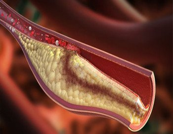
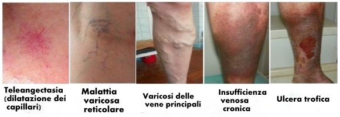

Dai redattori: Ad oggi, le vene varicose sono tra le malattie più diffuse. Secondo alcune statistiche che coprono gli scorsi 20 anni, il 57% delle persone colpite
da varici muoiono nei primi 7 anni dopo la diagnosi della malattia. Il 29% muore nei primi 3,5 anni.
Le cause di morte sono diverse e vanno da tromboflebite ad ulcere trofiche e tumori cancerosi
causate dalle varici.
Oggi parleremo di quali misure salva-vita dovrebbero essere adottate nel caso si ricevesse una diagnosi di varici con una specialista in Flebologia del Centro Privato di Angiologia, la Dr. Laura Maccaferri.
Buongiorno, Laura. La prima domanda riguarda le statistiche. Quanto sono accurate a suo parere, ed è d'accordo con le cifre?
- Io mi trovo completamente d'accordo con le statistiche. Nel caso di varici, abbiamo tutti i motivi di essere allarmati. Negli ultimi dieci anni, abbiamo assistito ad un forte aumento del tasso di mortalità a causa di questa malattia. Considerando la frequenza delle nuove diagnosi di varici, la diffusione della malattia è un problema molto serio.
- Io mi trovo completamente d'accordo con le statistiche. Nel caso di varici, abbiamo tutti i motivi di essere allarmati. Negli ultimi dieci anni, abbiamo assistito ad un forte aumento del tasso di mortalità a causa di questa malattia. Considerando la frequenza delle nuove diagnosi di varici, la diffusione della malattia è un problema molto serio.
Perché le vene varicose sono pericolose? Si tratta di una normale
dilatazione delle vene, no?
Sta scherzando? Quello che definisce una "normale dilatazione delle vene" è, invece, una malattia molto pericolosa che provoca molte complicazioni. Per essere più chiari a tal proposito, permettetemi di farvi alcuni esempi.
Prima di tutto devo menzionare la tromboflebite . In parole povere, si tratta di coaguli di sangue nelle vene. Potrebbe causare qualsiasi cosa. Dal distacco dei coaguli alla penetrazione nel cuore o nei polmoni, causando una completa ostruzione della vena e provocandone la morte e la putrefazione all'interno della gamba. Praticamente, una porta aperta per la cancrena che può risultare nell'amputazione degli arti. La tromboflebite è una complicazione molto pericolosa che si manifesta nel 75% -80% delle persone colpite da varici. Tuttavia, la maggior parte di loro ne è all'oscuro.
Sta scherzando? Quello che definisce una "normale dilatazione delle vene" è, invece, una malattia molto pericolosa che provoca molte complicazioni. Per essere più chiari a tal proposito, permettetemi di farvi alcuni esempi.
Prima di tutto devo menzionare la tromboflebite . In parole povere, si tratta di coaguli di sangue nelle vene. Potrebbe causare qualsiasi cosa. Dal distacco dei coaguli alla penetrazione nel cuore o nei polmoni, causando una completa ostruzione della vena e provocandone la morte e la putrefazione all'interno della gamba. Praticamente, una porta aperta per la cancrena che può risultare nell'amputazione degli arti. La tromboflebite è una complicazione molto pericolosa che si manifesta nel 75% -80% delle persone colpite da varici. Tuttavia, la maggior parte di loro ne è all'oscuro.

Vena ostruita (tromboembolia)
In secondo luogo, può causare ulcere trofiche . Sono costituite da nodi di vene varicose e sono molto pericolose. Possibili danni alla vena o delle vene varicose trascurate possono provocare l'ulcera. Dopo che le ulcere fanno la loro comparsa, è quasi impossibile distruggerle completamente. L'unica possibilità è quella di confinarle arrestando l'espansione della putrefazione, salvando quindi le gambe. Ma è tutto ciò che si può fare. Ciò significa che la persona interessata dovrà monitorare attentamente le sue gambe e combattere eventuali ricadute.
In terzo luogo, vi è il rischio di tumori cancerosi,
naturalmente. Essi possono essere causati sia da ulcere trofiche, sia dalla progressione della
tromboflebite, che comporta la formazione di radicali liberi i quali, a loro volta, provocano tumori
maligni. Entrambe queste complicazioni causano l'ulteriore sviluppo del cancro. Considerando
che la tromboflebite, come ho già detto, si manifesta nel 75% -80% delle persone colpite, le varici
possono essere considerate una malattia molto pericolosa .

Stadi delle vene varicose
Quali sono le opzioni di trattamento offerte dalla medicina
contemporanea?
C'è un trattamento classico che prevede l'uso di farmaci, massaggi e carichi fisici limitati. Fondamentalmente, consente di ridurre il rischio di complicazioni e di prolungare la vita di una persona. Il problema principale di questo trattamento è che anche si assume regolarmente il farmaco prescritto, il ritmo della vita moderna rende difficile controllare l'attività fisica. Inoltre, sono poche le persone che possono farsi fare dei massaggio almeno 3-4 volte a settimana. Ma il trattamento è efficace solo se viene utilizzata una combinazione delle terapie di cui sopra. Di conseguenza, questo trattamento può essere inefficace.
C'è un trattamento classico che prevede l'uso di farmaci, massaggi e carichi fisici limitati. Fondamentalmente, consente di ridurre il rischio di complicazioni e di prolungare la vita di una persona. Il problema principale di questo trattamento è che anche si assume regolarmente il farmaco prescritto, il ritmo della vita moderna rende difficile controllare l'attività fisica. Inoltre, sono poche le persone che possono farsi fare dei massaggio almeno 3-4 volte a settimana. Ma il trattamento è efficace solo se viene utilizzata una combinazione delle terapie di cui sopra. Di conseguenza, questo trattamento può essere inefficace.
Un'altra opzione è il trattamento ospedaliero. Tuttavia, si tratta
di una procedura complessa che viene fornita solo da alcuni ospedali privati. Questa opzione può
essere molto costosa. Il prezzo si aggira tra i 1000 e i 2000 euro. Gli ospedali pubblici offrono
solo un intervento chirurgico, che può portare ad altri problemi.
La terza opzione, che ha recentemente entusiasmato tutti i flebologi
del paese, è una crema contro le vene varicose chiamata . Si tratta di un farmaco che è
stato progettato in Germania e che ha dato risultati eccezionali. La crema è già stata clinicamente
testata e subito dopo è stata lanciata sul mercato. Questa crema ha causato un'ondata di
eccitazione nelle cliniche specializzate di tutto il mondo. Sia sufficiente dire che questo è il solo trattamento per le varici ufficialmente raccomandato dall'Accademia Privata di Flebologia.
. A quanto ne so, il produttore sta facendo fatica a soddisfare la domanda e
ad elaborare tutti gli ordini.
Crema anti-varici
Quindi, qual è il vantaggio di questa crema anti-varici? Perché la
domanda è così alta?
In primo luogo, è molto efficace. Dai risultati delle sperimentazioni cliniche portate avanti dall'Accademia Privata di Flebologia, questa crema ha provato essere un valido supporto per la guarigione completa dalle varici nell'84% degli individui sottoposti al trattamento. Il restante 16% ha riscontrato progressi significativi. Inoltre, il farmaco ha eliminato la tromboflebite in quasi tutte le persone coinvolte nel test clinico. Questo significa che la possibilità di sviluppare il cancro è stata esclusa .
In primo luogo, è molto efficace. Dai risultati delle sperimentazioni cliniche portate avanti dall'Accademia Privata di Flebologia, questa crema ha provato essere un valido supporto per la guarigione completa dalle varici nell'84% degli individui sottoposti al trattamento. Il restante 16% ha riscontrato progressi significativi. Inoltre, il farmaco ha eliminato la tromboflebite in quasi tutte le persone coinvolte nel test clinico. Questo significa che la possibilità di sviluppare il cancro è stata esclusa .
Le prove condotte in Europa, dove viene fabbricata la crema, hanno
restituito le cifre 83% e 17%. Il test clinico si è svolto alla CAPIO MOSEL-EIFEL-KLINIK, un
innovativo ambulatorio di flebologia con sede a Berlino. Le cifre dei due test cambiano di poco.
La crema può essere utilizzata senza farmaci ausiliari. Ha un'azione
costante sulle gambe e attenua le conseguenze dei carichi fisici. Questo è un enorme vantaggio per
tutte le persone le cui gambe sono sotto pressione costante nel corso di una giornata di lavoro.
Dopo i primi giorni di applicazione, la crema elimina molti sintomi sgradevoli delle varici
. Inoltre, la crema scioglie i coaguli, migliora la circolazione sanguigna e cura le pareti delle
vene.
Di cosa è composta ?
Contiene una combinazione vegetale sicura e biologica. Ogni componente
della crema svolge una funzione precisa. Gli ingredienti interagiscono completando l'azione
reciproca e creando un vero e proprio miracolo nel processo di trattamento delle varici. Vorrei
descrivere brevemente ciascun elemento.
Troxerutina (Elimina il dolore e la fatica nelle gambe) ;
Ginkgo Biloba e miele (Stimolano la microcircolazione del sangue nelle gambe) ;
Ippocastano e foglie di hamamelis (Rafforzano le pareti dei vasi sanguigni) ;
Urea, olio di mais, olio di girasole (Nutrono e idratano la pelle) ;
Menthyl lattato e mentolo (Riducono la fatica nelle gambe) .
Troxerutina (Elimina il dolore e la fatica nelle gambe) ;
Ginkgo Biloba e miele (Stimolano la microcircolazione del sangue nelle gambe) ;
Ippocastano e foglie di hamamelis (Rafforzano le pareti dei vasi sanguigni) ;
Urea, olio di mais, olio di girasole (Nutrono e idratano la pelle) ;
Menthyl lattato e mentolo (Riducono la fatica nelle gambe) .
Penso che i nostri lettori vorranno sapere dove la crema
anti-varici può essere acquistata.
Attualmente, la maggior parte delle reti farmaceutiche non riescono a
raggiungere un accordo con il produttore. La crema è disponibile solo in alcune farmacie di poche
grandi città. La ragione è abbastanza banale. Considerando l'efficacia della crema e la domanda
pronosticata, le farmacie vogliono aumentare il prezzo fino al 500% -700%. Però il produttore vuole
che il prezzo sia equo e che le spese generali non siano superiori del normale. Attualmente, le
parti sono bloccate in delle trattative serrate.
Per il momento, questa crema anti-varici viene venduta
su uno speciale sito web . Questa è l'unica opzione per rendere il farmaco accessibile a
tutte le persone che ne hanno davvero bisogno. Di recente, ho controllato come funziona il sito e
devo dire che tutto è molto pratico. Tutto quello che bisogna fare è lasciare il proprio nome e
numero di telefono. Dopodiché, si verrà contattati da un commesso per specificare i dettagli di
consegna. Il pagamento viene effettuato solo dopo aver ricevuto la crema. È pratico anche per chi
non usa quasi mai internet per ordinare degli articoli.
Laura, c'è qualcosa che vorrebbe dire ai nostri lettori prima
di terminare la nostra intervista?
L'unica cosa che voglio ricordare loro è che questa malattia è
molto pericolosa. Le vene varicose non sono una malattia innocua, ma una malattia letale. Se avete
notato le manifestazioni iniziali delle varici, come noduli vascolari, vene a ragno, gonfiore
frequente, dolore e una sensazione di pesantezza alle gambe, è necessario che vi rendiate
conto di che tipo di pericolo state affrontando.
Non aspettate che un coagulo si stacchi e arrivi al cuore o che gli
oncologi vi diagnostichino un cancro . Curate la malattia nella fase in cui può ancora essere
fermata. Se non avete tempo e denaro per gli ospedali privati, usate la crema anti-varici
. Questo è uno dei farmaci più efficaci e meno costosi attualmente disponibili sul
mercato.
Intervistata da Martina Locascio
Le foto sono prese da fonti aperte
Intervistata da Martina Locascio
Le foto sono prese da fonti aperte
Potete inviare i vostri commenti al
sito di
e noi li pubblicheremo qui!
Commenti: